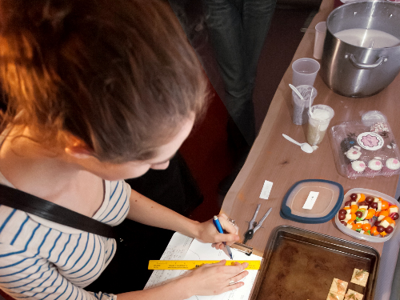

Untrusted
A lo-fi hacking-themed adventure game
“Untrusted” (2014) is a lo-fi cyberpunk adventure game that challenges the player to escape from a series of 21 increasingly cryptic puzzle rooms by editing the very code that is running the game in the web browser.
{kind=link}
{kind=link}
{kind=link}

Not A Soul in the World
Help an emulated brain recover his memories
“Not a Soul in the World” (2012) is a text-based adventure game in which you play the part of a psychologist talking to the first mind successfully uploaded into a computer, who has come to believe that he is an AI program and not a human. Your objective is to make the patient realize that he is human, by uncovering powerful memories from his past.
{kind=link}
{kind=link}
{kind=link}

A Snack in Every Port
Map a ship's path to determinge what you eat
“A Snack in Every Port” (2014) was an interactive potluck entry. In it, a paper map and a compass were presented to each player, who in turn traced out the path of a ship on the map. Where the ship landed determined which of several dishes each player could eat.
{kind=link}
{kind=link}

Shattered Worlds
A puzzle-platformer with a twist
“Shattered Worlds” (2014) is a puzzle-platformer game in which you play as a lost sprite looking for his home game, all while collecting pieces of other games. You progress through the game by overlaying levels you have completed on top of the current level, turning previously encountered obstacles into tools for the player.
{kind=link}
{kind=link}
{kind=link}